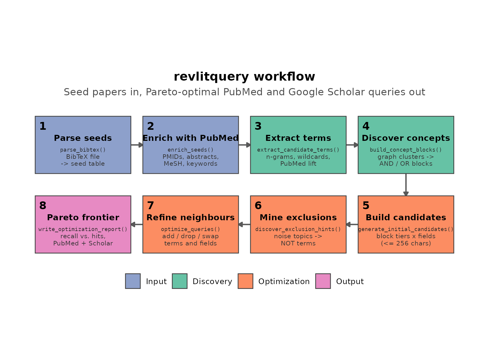
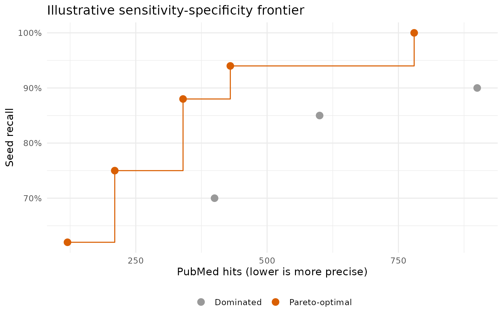

How revlitquery Works: The Workflow Step by Step
Source:vignettes/workflow-explained.Rmd
workflow-explained.RmdOverview
revlitquery performs a reverse literature
search: you give it a handful of papers you already know are
relevant (the seed corpus), and it reverse-engineers a boolean
query for PubMed and Google Scholar
(at most 256 characters) that finds those papers and as few irrelevant
ones as possible.
Nothing about the topic is hardcoded. Concepts, synonyms, wildcards and exclusions are all discovered from the text of the seed papers and of the non-seed papers a draft query returns.
The figure below summarises the eight steps. The rest of this vignette explains each one and runs a small, fully offline example on a synthetic corpus (no network access needed).

The whole pipeline is wrapped by
optimize_search_queries(); every step is also exported so
you can run, inspect, or replace it individually.
A synthetic seed corpus
To keep the example offline, we build the seed table by hand. In real use, steps 1 and 2 produce exactly this structure from your BibTeX file.
titles <- c(
"Pollinator decline in fragmented agricultural landscapes",
"Wild bee pollinator richness decline across fragmented farmland",
"Bumblebee abundance loss in fragmented agricultural habitats",
"Pollinator diversity loss in fragmented agroecosystem landscapes",
"Solitary bee decline across fragmented cropland habitats",
"Pollinator richness loss in fragmented agricultural ecosystems",
"Pesticide exposure drives pollinator decline in farmland",
"Hoverfly pollinator abundance decline in fragmented meadows"
)
seeds <- tibble::tibble(
seed_id = seq_along(titles),
citekey = paste0("seed", seq_along(titles)),
year = as.character(2016 + seq_along(titles)),
doi = "",
pmid = as.character(1000 + seq_along(titles)),
in_pubmed = TRUE,
full_title = titles,
full_abstract = titles,
full_text = titles,
mesh_terms = rep(list(character(0)), length(titles)),
all_keywords = rep(list(character(0)), length(titles))
)
seeds[, c("citekey", "full_title")]
#> # A tibble: 8 × 2
#> citekey full_title
#> <chr> <chr>
#> 1 seed1 Pollinator decline in fragmented agricultural landscapes
#> 2 seed2 Wild bee pollinator richness decline across fragmented farmland
#> 3 seed3 Bumblebee abundance loss in fragmented agricultural habitats
#> 4 seed4 Pollinator diversity loss in fragmented agroecosystem landscapes
#> 5 seed5 Solitary bee decline across fragmented cropland habitats
#> 6 seed6 Pollinator richness loss in fragmented agricultural ecosystems
#> 7 seed7 Pesticide exposure drives pollinator decline in farmland
#> 8 seed8 Hoverfly pollinator abundance decline in fragmented meadowsStep 1: Parse the seed BibTeX file
parse_bibtex() reads a .bib file, cleans
LaTeX markup, and extracts titles, abstracts, DOIs, PMIDs and keywords.
It tolerates concatenated strings, nested braces and malformed
entries.
seeds_raw <- parse_bibtex("path/to/seed_articles.bib")Step 2: Enrich seeds with PubMed
enrich_seeds() resolves each reference to a PubMed
record by PMID, then DOI, then fuzzy title match
(title_jaccard()). It adds PubMed abstracts, MeSH headings
and author keywords, and flags seeds that are not in PubMed
(in_pubmed = FALSE). Calls follow the NCBI usage policy
(identified tool name, HTTP POST, rate limiting) and are cached on
disk.
seeds <- enrich_seeds(seeds_raw, cache_dir = ".cache")Step 3: Extract and score candidate terms
extract_candidate_terms() mines 1- to 3-grams from
titles and abstracts and synthesizes prefix wildcards
(for example decreas*, pollinat*) when several
corpus words share a stem that rescues extra seeds. A multi-layer
set-cover shortlist keeps terms from several independent facets of the
corpus, plus rare terms that rescue outlier papers. Each shortlisted
term is probed in PubMed for its background frequency, giving a
lift (how over-represented the term is in your seeds
compared to PubMed overall).
Here a function replaces the live PubMed probe:
fake_bg <- function(term) {
switch(term,
"pollinator" = 9000L, "decline" = 120000L, "fragmented" = 15000L,
40000L
)
}
terms <- extract_candidate_terms(seeds, probe_pubmed = TRUE, eval_bg_fn = fake_bg)
head(terms[, c("term", "df_tiab", "bg_hits", "lift")], 8)
#> # A tibble: 8 × 4
#> term df_tiab bg_hits lift
#> <chr> <int> <int> <dbl>
#> 1 fragmented 7 15000 2217.
#> 2 pollinator 6 9000 3166.
#> 3 decline 5 120000 198.
#> 4 fragmented agricultural 3 40000 356.
#> 5 agricultural 3 40000 356.
#> 6 loss 3 40000 356.
#> 7 decline across fragmented 2 40000 237.
#> 8 pollinator decline 2 40000 237.Step 4: Discover concept blocks
Instead of a predefined concept list,
build_concept_blocks() discovers the structure of the topic
from the data:
- The best high-lift anchor becomes the primary topic block.
-
discover_term_clusters()builds a graph of candidate terms. Edges combine local-context and MeSH/keyword similarity (a small latent semantic analysis), coverage complementarity (two terms that cover different seeds are likely interchangeableORsynonyms), and lexical similarity. Louvain community detection then groups terms into concepts. - Within each community a greedy set-cover grows an
ORblock; blocks are combined withAND.
blocks <- build_concept_blocks(
terms, seeds,
max_blocks = 3L,
probe_selectivity = TRUE,
eval_joint_fn = function(t1, t2) 2500L # stand-in for a PubMed joint count
)
for (b in blocks) cat(sprintf("%-22s %s\n", b$name, paste(b$terms, collapse = " | ")))
#> primary_topic fragmented | pollinator
#> concept_decline decline
#> concept_agricultural agricultural | loss | abundance | richnessYou can always override discovery with custom_blocks in
the configuration.
Step 5: Build and translate candidate queries
generate_initial_candidates() combines block specificity
tiers and fields (title vs. title/abstract) into diverse candidates,
discarding any that exceed 256 characters once translated. A query is a
canonical object that to_pubmed_query() and
to_google_scholar_query() translate into each syntax
(Google Scholar has no truncation operator, so wildcards are expanded to
the dominant corpus word or a morphological stem).
q <- make_query(list(
list(name = "topic", field = "tiab", terms = c("pollinat*", "bee")),
list(name = "trend", field = "tiab", terms = c("decline", "loss"))
), exclude_terms = "pesticide")
cat(to_pubmed_query(q), "\n")
#> (("pollinat*"[tiab] OR "bee"[tiab]) AND ("decline"[tiab] OR "loss"[tiab])) NOT ("pesticide"[tiab])
cat(to_google_scholar_query(q), "\n")
#> (pollinat OR bee) (decline OR loss) -pesticide
gs_char_count(q)
#> [1] 46Without network access, estimate_local_query() scores a
query against the seed texts, which is what the optimizer uses to
pre-rank candidates before spending PubMed calls.
est <- estimate_local_query(q, terms, seeds)
c(local_recall = est$local_recall, seeds_found = est$local_found)
#> local_recall seeds_found
#> 0.75 6.00Step 6: Mine exclusion hints
discover_exclusion_hints() samples non-seed articles
returned by the best draft query and finds what makes them noise.
Candidate NOT terms (words, phrases, and synthesized
wildcards) are checked locally against the seeds so none that would drop
a seed is recommended blindly. Terms are then partitioned into
noise topics by an NPMI/Jaccard co-occurrence graph
with Louvain clustering (cluster_exclusion_terms()), and a
greedy set-cover builds compact exclusion bundles that fit in the
256-character budget. Verified hit reductions come from live PubMed
counts.
noise_terms <- c("xenograft", "mice", "vitro", "resection", "laparoscopic", "biopsy")
noise_cov <- list(
c(rep(TRUE, 6), rep(FALSE, 6)), c(rep(TRUE, 5), rep(FALSE, 7)),
c(FALSE, rep(TRUE, 5), rep(FALSE, 6)), c(rep(FALSE, 6), rep(TRUE, 6)),
c(rep(FALSE, 6), rep(TRUE, 5), FALSE), c(rep(FALSE, 7), rep(TRUE, 5))
)
as.character(cluster_exclusion_terms(noise_terms, noise_cov))
#> [1] "topic_xenograft_mice" "topic_xenograft_mice"
#> [3] "topic_xenograft_mice" "topic_resection_laparoscopic"
#> [5] "topic_resection_laparoscopic" "topic_resection_laparoscopic"Step 7: Refine neighbours
optimize_queries() runs a two-stage search under a fixed
evaluation budget (max_evals). Stage 1
evaluates the initial candidates live. Stage 2a adds
exclusion-refined variants. Stage 2b greedily generates
neighbours of the current Pareto queries: prune a term, switch a field,
swap in a narrower variant, add a rescue term from the same concept
cluster for seeds still missed, add a qualifier block, or extend the
exclusions. Each round re-evaluates the most promising neighbours and
stops once the frontier stops improving.
Step 8: Read the Pareto frontier
Every evaluated query has a recall (share of seeds found) and a hit
count (PubMed results). The Pareto frontier keeps
queries that no other query beats on both axes.
write_optimization_report() exports it with PubMed and
Google Scholar strings and links; the Shiny app
(run_revlitquery_app()) shows it interactively.
frontier_demo <- data.frame(
recall = c(0.62, 0.75, 0.88, 0.94, 1.00, 0.70, 0.90, 0.85),
hits = c(120, 210, 340, 430, 780, 400, 900, 600)
)
frontier_demo$is_pareto <- compute_pareto_frontier(
data.frame(combined_recall = frontier_demo$recall, pm_hits = frontier_demo$hits,
gs_chars = 100L, n_terms = 4L)
)
ggplot(frontier_demo, aes(hits, recall)) +
geom_step(data = subset(frontier_demo, is_pareto), direction = "hv",
colour = "#d95f02") +
geom_point(aes(colour = is_pareto), size = 3) +
scale_colour_manual(values = c(`TRUE` = "#d95f02", `FALSE` = "grey60"),
labels = c("Dominated", "Pareto-optimal"), name = NULL) +
scale_y_continuous(labels = scales::percent) +
labs(x = "PubMed hits (lower is more precise)", y = "Seed recall",
title = "Illustrative sensitivity-specificity frontier") +
theme_minimal(base_size = 11) +
theme(legend.position = "bottom")
Pick the point on the frontier that matches your review: a high-recall query for systematic reviews, or a compact query for quick scoping.
Putting it together
All eight steps run in one call:
res <- optimize_search_queries(
bib_path = "path/to/seed_articles.bib",
output_dir = "output",
min_recall = 0.90,
max_hits = 1000
)
res$pareto_dfSee vignette("cli-and-r-workflow") for command-line
options and vignette("shiny-interface") for the interactive
dashboard.